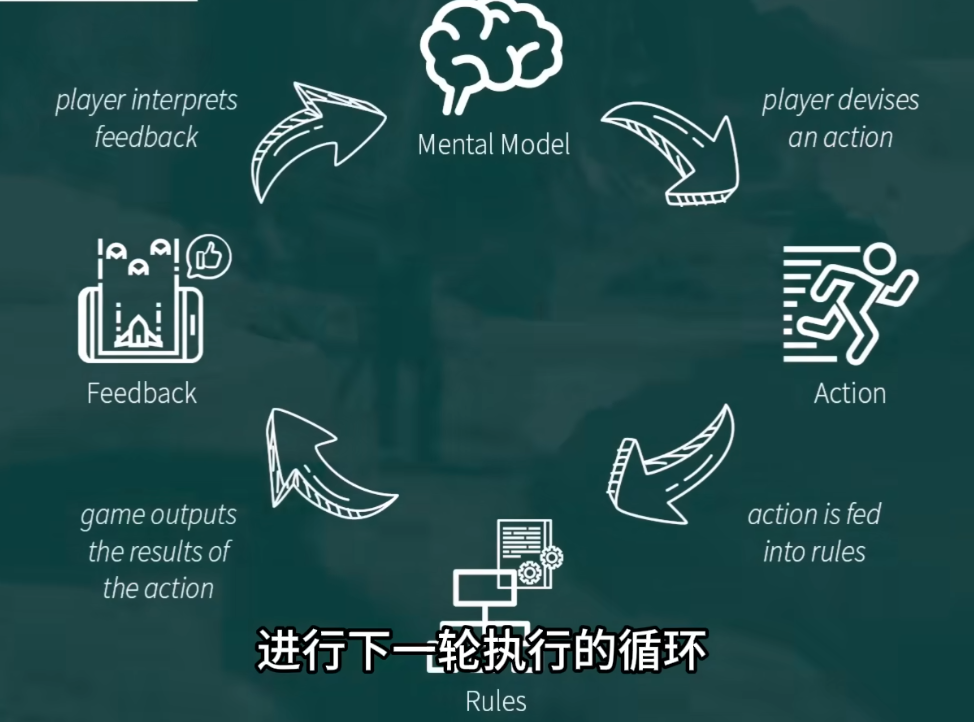

游戏的反馈循环，简单概括就是，玩游戏这件事情的本质，就是在重复一个，玩家根据现有的知识和当前情况（心智模型 Mental Model）去执行一个动作 Action，游戏根据规则 Rules 对执行动作进行计算，给出玩家反馈 Feedback，玩家根据反馈调整自己的心智模型，进入下一轮的循环。

但这个循环明显不止适用于游戏，对学习也适用。
这个循环可大可小，一次攻击是一个循环，一次打Boss的尝试也是一个循环，但这一个循环必定是会走的。
思考，在画画中，这些代表着什么？这个循环能让游戏玩下去，上瘾，如何让同样的循环让画画画下去，上瘾？
心智模型，那不必说，关于画画的领域知识和肌肉记忆。
行动，我根据心智模型做的行动，往小了说是落笔，往大了说是绘制一个形状，安排一个物体，定一个构图。在做行动时，脑子里已经对行动的结果有所预期。
规则，现实中的物理规律和绘画软件的代码逻辑。
反馈，往具体的说，是我对画布进行变更后，变更后的结果，往抽象的说，是我塑造出来的形状，物体，是否合理，是否漂亮，是否有结构错误……行动是哪个抽象层级的，反馈就应当是哪个抽象层级的。
然后，人根据行动的预期和实际的反馈，修正自己的心智模型，重复这个循环。
本博客所有文章除特别声明外，均采用 CC BY-NC-SA 4.0 协议 ，转载请注明出处！